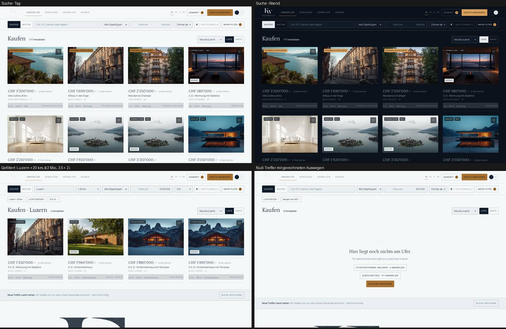
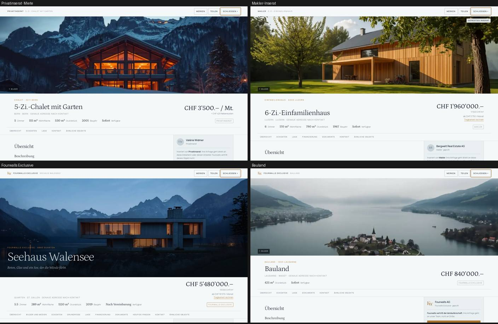
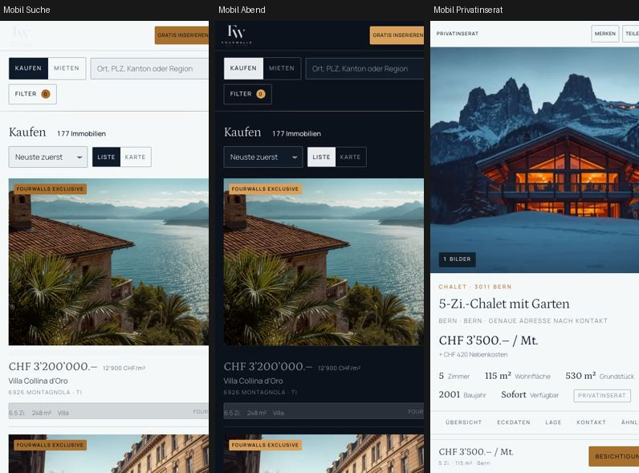

P1 hat bewiesen, dass ein Objekt hervorragend dargestellt werden kann. P2 beweist, dass dieselbe Architektur auch dann trägt, wenn ein Anbieter drei Fotos liefert und ein anderer dreizehn, wenn ein Objekt Grundrisse hat und das nächste nicht, wenn es um Miete geht statt um ein Seehaus.
Ein neues Modul leitet aus jedem Inserat ein Objektdossier ab. Die Grundregel steht im Code an erster Stelle: es werden keine Fakten erfunden. Abgeleitet wird nur, was tatsächlich am Inserat hängt — Flächen, Zimmer, Baujahr, Merkmale, Quelle, Verfügbarkeit. Der Zustand wird aus dem Baujahr geschätzt und als Ableitung gekennzeichnet. Fehlt eine Angabe, fehlt der Abschnitt. Handgeschriebene Dossiers haben Vorrang.
Neu getrennt: Verfügbarkeit (sofort, ab Datum, nach Vereinbarung, reserviert, verkauft, vermietet) und Publikationsstatus (publiziert, reserviert, archiviert). Verkaufte und vermietete Objekte erscheinen nicht mehr als normal verfügbar; sie sind über einen Schalter im Filter sichtbar, in der Ergebniskarte gekennzeichnet und im Bild gedämpft.
Jeder Weg in ein Objekt läuft über den neuen Renderer: Ergebnisliste, Karte, Favoriten, ähnliche Objekte, Direktlink, Zurück-Taste.
| Quelle | Inserate | Tiefe | Typische Stationen |
|---|---|---|---|
| Privat | 108 | A — was der Anbieter liefert | 5 bis 6 |
| Makler | 113 | B — gewerblich | 7 |
| Verwaltung | 29 | B | 7 |
| Bauträger | 20 | B | 7 |
| Fourwalls | 50 | B bis C | 7, Flaggschiff 10 |
| Stichprobe über alle Quellen, Objektarten und beide Transaktionsarten: 14 von 14 öffnen sauber, kein leerer Abschnitt, Finanzblock nur bei Kauf von Wohnobjekten. | |||
Drei Angaben: die gespeicherte Suche mit ihrer Trefferzahl, eine E-Mail-Adresse, eine Frequenz. Danach die Bestätigung — und erst dort das Angebot, das Abo mit einem Konto auf allen Geräten zu verwalten. Keine Kontowand vor dem Nutzen.
Gemessen mit leichten synthetischen Zusammenfassungen, keine Bildobjekte:
| Datensätze | Filter und Sortierung | Empfohlen | Umkreis |
|---|---|---|---|
| 320 | 0.8 ms | 27 ms | 0.6 ms |
| 1 000 | 0.1 ms | 1.3 ms | 0.4 ms |
| 10 000 | 0.8 ms | 5.4 ms | 1.8 ms |
| 50 000 | 7.4 ms | 26 ms | 21 ms |
Die Rechenzeit ist nicht die Grenze. Die Grenze ist die Nutzlast: eine Zusammenfassung wiegt rund 870 Byte, der ganze Bestand 272 KB roh und 28 KB komprimiert. Bei etwa 2000 Objekten ist Schluss mit dem Ausliefern des ganzen Bestands — ab dort muss die Suche auf den Server. Zusammenfassung und Dossier sind bereits getrennt, das Dossier wird berechnet und nicht mitgeliefert.
Ladestrategie: 24 Treffer, dann «Weitere anzeigen». Begründung: die Zurück-Taste bleibt brauchbar, auf dem Telefon entsteht kein Scrollgefängnis, und für Suchmaschinen zählen in Produktion ohnehin die Kategorieseiten und die Objektseiten, nicht die Filterkombinationen.



Zwei Fehler wurden dabei gefunden und behoben: das Filterblatt hing auf Mobil am oberen Rand, weil die Suchleiste durch ihre Weichzeichnung zum Bezugsrahmen für fixierte Elemente wurde; und die Zimmerauswahl im Filter verschwand auf Mobil, weil eine Ausblenderegel zu weit griff.
P3 ist die Karte, wie im Auftrag vorgesehen. Vor der Kartografie sollten zwei Dinge geklärt sein, weil sie die Kartenarbeit sonst zweimal anfallen lassen:
Danach: MapLibre mit Vektorkacheln, Cluster, Preis-Pins, Suche im Kartenausschnitt, Umkreis auf der Karte, mobile Kartenbedienung und Kartenzustand in der Adresse.
Fourwalls · Phase 2 · Marke p2-marktplatz · alle Objektdaten sind fiktive Demo-Daten